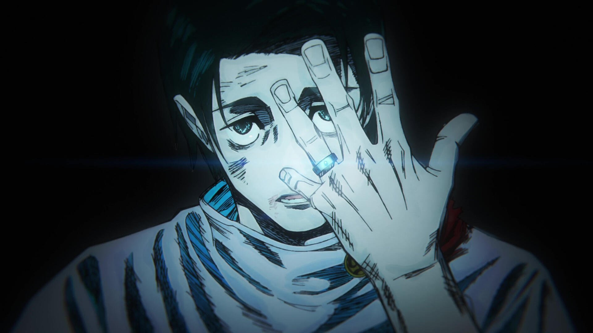

El Hechicero de Clase Especial
15/10/2026 - La historia de Yuta Okkotsu comenzó con una trágica maldición vinculada a Rika Orimoto. Tras su ingreso al Colegio Técnico de Magia Metropolitana de Tokio, demostró un potencial inigualable que lo llevó a la cima del mundo de la hechicería.
Con una reserva de energía maldita que supera incluso a la de Satoru Gojo, Yuta se ha convertido en uno de los pilares fundamentales para proteger a la humanidad de las amenazas más peligrosas.